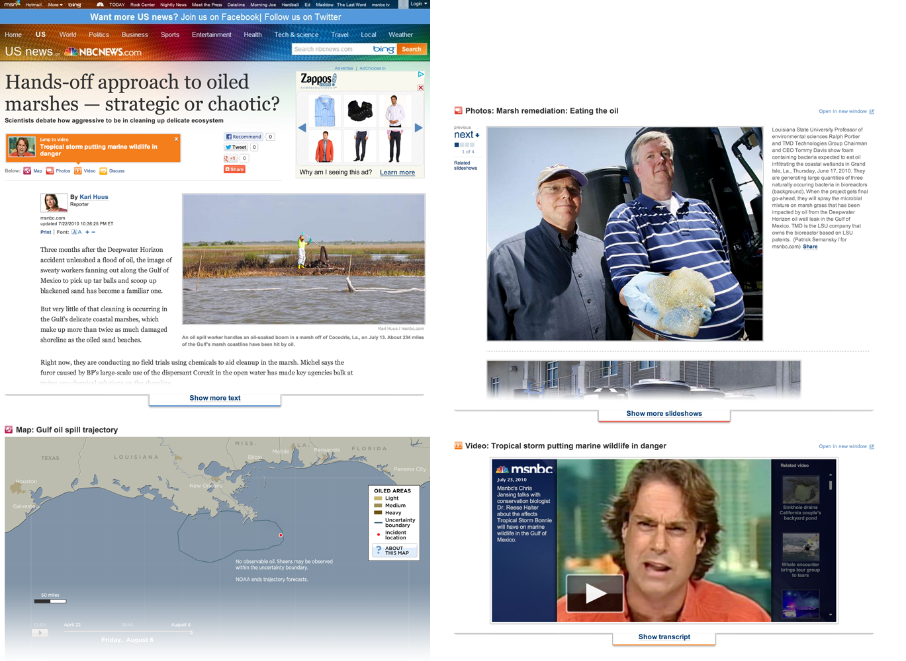
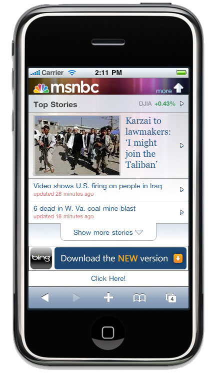
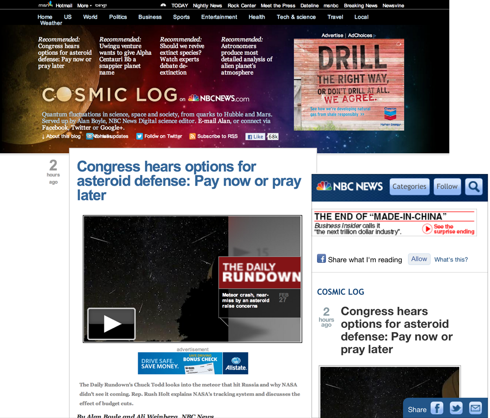
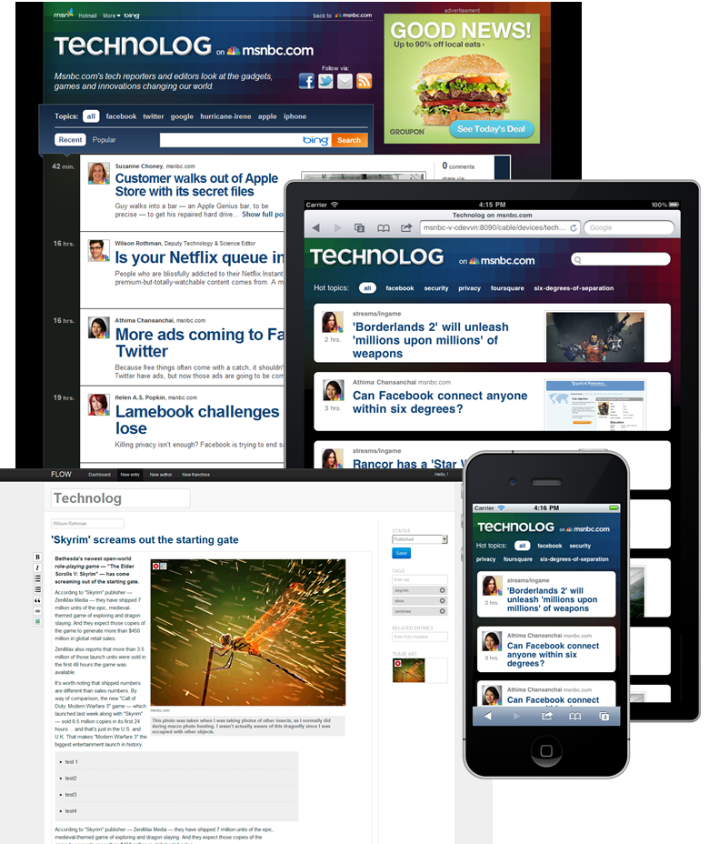
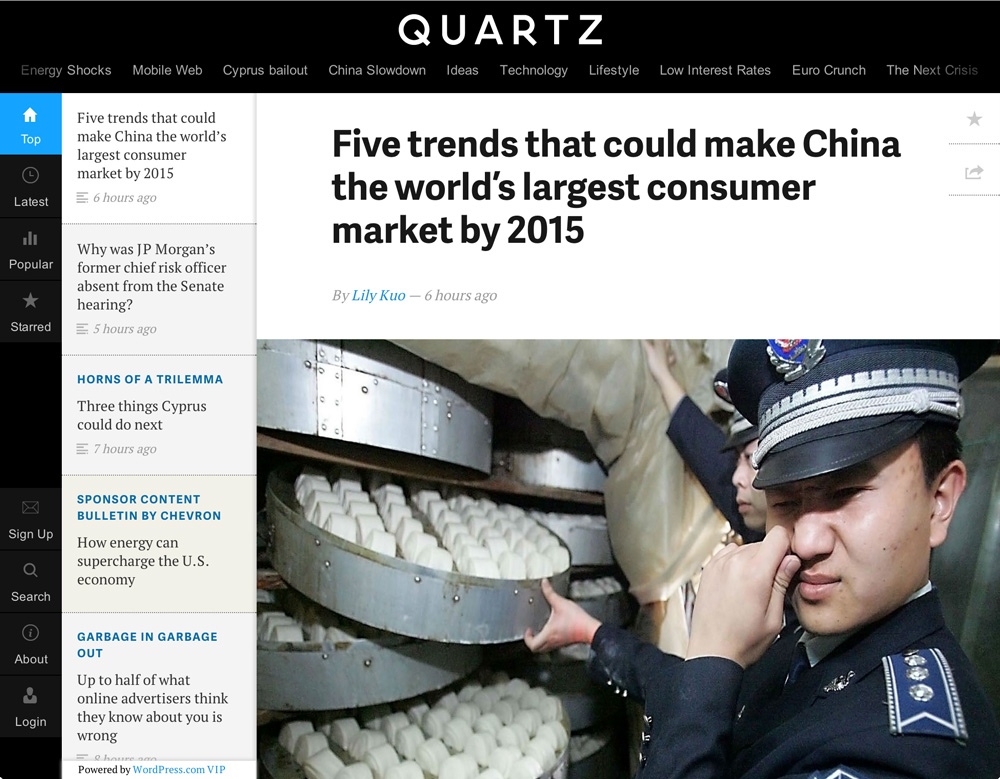

The Story of UX
The Interactive Era
1997
1999
2000
2001
2002

2005
2007
Troubled times
- Interactive storytelling proved difficult to scale
- Org structure got in the way of collaboration
- Developers in Technology
- Designers, Interactive Producers & Concepts
separate groups within Editorial - Nobody dedicated to site design
Collision Course
2006
2008
2008
2008
2008

Faster, better ...
and still falling behind
- Pace of industry change accelerated
- Technology and increasingly dev-oriented Creatives
struggled to collaborate internally
Creative Development
2010
2010
2010
2011
2011
2011
2012
2012-3
It's important that we build a UX discipline. Being part of a larger cohesive UX team allows us to share ideas, findings via analytics and ultimately work smarter.
Shezad Morani, Creative Director
Leasons learned
- App-like experiences are the future of UX
- Building editorial tools distracts us from this
- Smaller teams & stakeholder groups are more efficient
- Dedicated brand teams must lead product design
- Keeping up with change is a full-time job
Living on the edge
Single Page Applications
Build. Measure. Learn. Share.
- Prototype everything. Use real content & ads.
- Make data-driven decisions. Always be A/B testing.
- Evolve experiences. Make redesigns irrelevant.
- Collaborate with like minds via open-source code
Demo: http://side-nav-deploy.herokuapp.com/
A particularly energizing facet about our GitHub approach is it's already opening the door to a collaborative coding community across the organization, including our peers in Comcast. Our open-source-inspired culture will fast become a potent recruiting tool.
Colin Hicks, UX Architect
The UX Group
- Consumer-facing design & front-end dev
- Brand teams lead site UX
- Shezad Morani leads NBCNews.com UX
- Anne Van Wagener leads TODAY.com UX
- TBH to lead msnbc.com UX
- Shared Features team becomes UX R&D
- Colin Hicks & Chris Cast lead framework dev
- Gary Hebert manages team, leads UX research
- Gabriel Nanda leads the Ad UX team